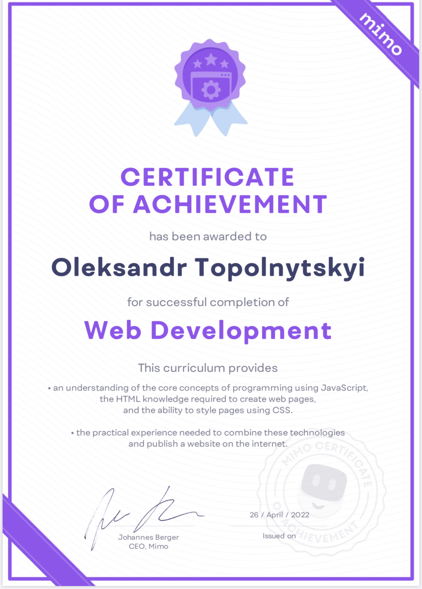
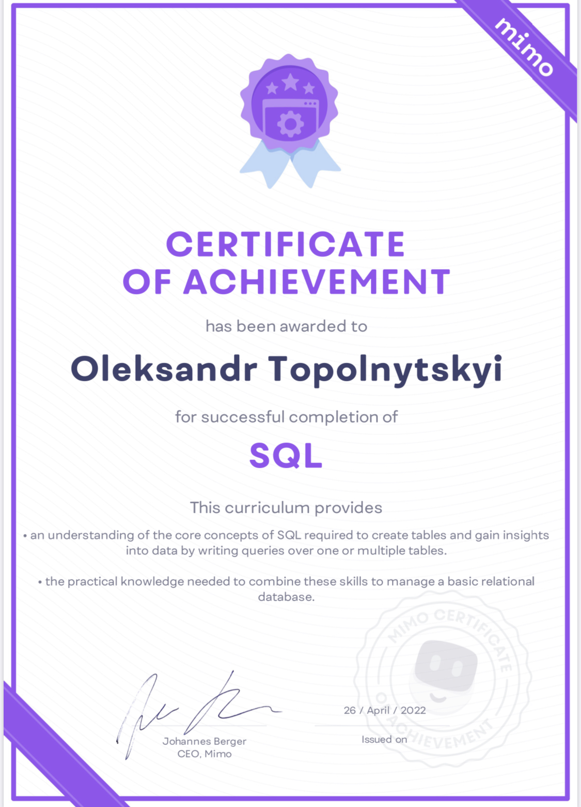
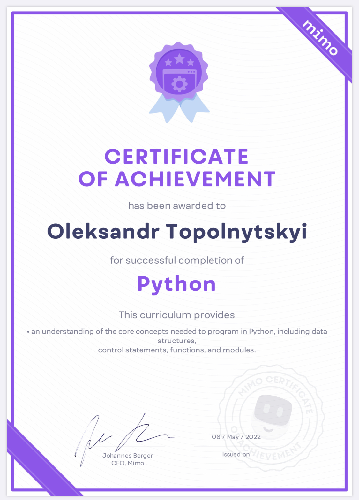

Oleksandr Topolnytskyi
Looking for a position Manual QA Engineer


SUMMARY
I have been involved in quality control, quality assurance and quality management for many years. I am a coach on this topic. I understand and apply the Deming PDCA cycle and SDLC.
OBJECTIVE
To obtain a Manual QA Engineer position on the WEB project in a great company for improving software products with future professional growth to a QA Automation or Professional Penetration Tester
EDUCATION
Information - measuring equipment faculty of the National Technical University of Ukraine “Kyiv Polytechnic Institute”.
COURSES
- MIMO
April 2022
HTML / CSS, ES6, Flexbox,
Java core, JavaScript core, GitApril 2022
SQL coreMay 2022
Clases, OOP, React core, Phyton core   - Meta Academy | April - May 2022 | Training courses of Java and SQL
- Udemy, Inc. | May 2022 - till now | Course “ISTQB Foundation Level 2022 Complete Training”
- SkillUp | June 2022 - till now | Course “QA Training”
SOFT SKILLS
Teamwork | Time management | Communicable | Responsible | Have an eye for detail | Self-taught | Organized | Self - motivated | Punctual
PROFESSIONAL SKILLS
Methodology:
- Knowledge of QA Theory;
- Functional or Non-functional testing (UI, GUI, usability, installation, black box, system, dynamic, exploratory, retesting, regression testing);
- Bug finding and reporting bugs;
- Creating check-lists and test cases and writing test result reports;
- HTML / CSS, JavaScript, Java core, SQL сore;
- Knowledge of ISO series 25000 international standards “Software engineering – Software product Quality Requirement and Evaluation (SQuaRE)”;
- SCRUM; Kanban Framework, Flowchart, Mind Map;
Tools & test manager systems:
Utest; Jira, Confluence; TestRail; Chrome DevTools , Visual Studio Code, IDE: IntelliJ Idea; Git/GitHub; OS: Windows, iOS; Coding practice, Java and SQL of: www.codewars.com
WORK EXPERIENCE | UTEST | QA
I got experience to doing Functional testing and User interface testing (UI): Ensure all page elements are consistent like buttons, links, images, text, and video across the most popular browsers/app. Category Pages: Sort, Filter, Add to List, Add to Basket. Product Pages: Product details, Add to List, Add to Basket.
Methodology: QA Theory, Bugs reports, Test cases
Tools/Technologies: Utest. Chrome DevTools, Word, Excel
Responsibilities: Performing functional testing, creating and maintaining manual bugs, test cases and test documentation
Achievements: Functional testing and User Interface testing (UI). More than 50 bugs were found and registered. You can see the results below.
Non-commercial Project | June 2022 | A leading in lease-to-own a products, /( https://www.aarons )
Description: Since 1955, Aaron's has led the way
in lease-to-own furniture, appliances and electronics.
Non-commercial Project | June 2022 | A leading global retailer, ( https://www.carrefour.com/en/ )
Description: It’s global network of over 12,000 stores with an online shopping website unique to each country, we are enabling each customer to do their shopping when they want, where they want and how they want.
Non-commercial Project | June 2022 | A map and automate of business processes, ( https://fluix.io/ )
Description: Mission Fluix is to empower employee productivity. They strive to create superior mobility experiences for teams to work more efficiently with saving time, speeding up work cycles, avoiding paper waste and optimizing their business operations based on data insights collected in the field.
WORK EXPERIENCE | PROGRAMMING | QA
Pet Project | March 2022 – till now | My Business card, /( https://oleksandr.top )
Description: Web-projects. Web design and programming to confirm the acquired knowledge
Methodology: Jira, Scrum (Project Management) (sprint, 2 weeks), Flowchart, Mind Map, Kanban
Tools/Technologies: HTML / CSS, JS, IDE: IntelliJ Idea, TestRail, Jira (Confluence), miro ( https://miro.com/ Mind Map, Kanban Framework, Flowchart).
Responsibilities:
- Implementation of the project in order to consolidate the acquired knowledge during online learning
- Performing functional and cross-browser testing, creating and maintaining manual test cases; checklists and test documentation
Achievements:
- Creating functionality of your business card using HTML, creating design and styling CSS, creating a dynamic HTML page with photo editing using JavaScript
- Project Management in Jira,
- Website analysis with Chrome DevTools,
- Functional or non-functional testing (GUI, usability, installation, black box, system, dynamic, ad hoc, exploratory, new feature, retesting, regression testing)
- A package of completed documents: bugs and test case can be pressed by clicking the button below
WORK EXPERIENCE | MANAGEMENT
Projects of implementation of quality management systems in a Software Product | since 2012 |
Med Lab “DILA” LLC, HD-GROUP (TM “Hlibodar”) LLC, “Natural Products” LLC, “Chudova Marka” LLC, “Frolov Barin” PP, “MaksiBud Engineering” LLC, “Technical and managerial services” LLC, “Ukrainian Center for Tomotherapies” LLC, And 7 more companies
Description: Development and implementation of Quality Management System (QMS)
Methodology: Process Approach, PMBOK, Deming cycle Plan-Do-Check-Act (PDCA), Integrated Computer Aided Manufacturing (ICAM) Definition (IDEF0).
Tools/Technologies: Software ELMA.
Responsibilities:
- creating very complex processes; coaching of process approach; project management: deadlines control, resource allocation, project team management, process development team management, project quality assurance, financial management.
Achievements:
Development, implementation and coaching of:
- - quality assurance (QA) in processes,
- - creation of quality control (QC) in the internal processes of companies,
- - the process approach,
- - the quality management system (QMS)
- - the key performance indicators (KPI)